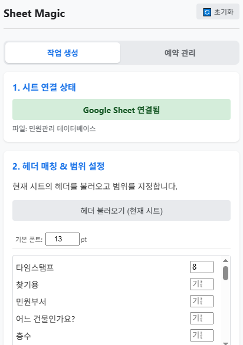
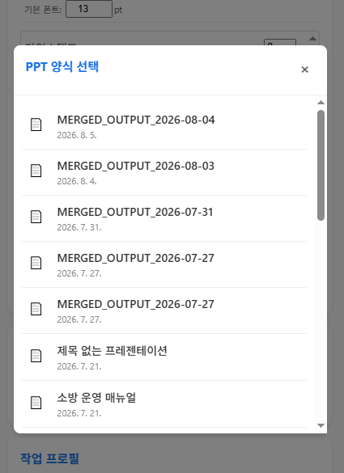
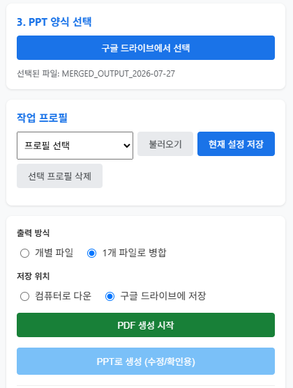
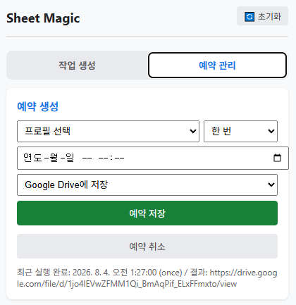

01 · シートを接続
Google Sheets を開く
対象のシートを開き、ヘッダーを読み込んで使用する範囲とフォントを設定します。
Google Sheets のデータを Google Slides のテンプレートに差し込み、PDF または PPT を作成する Chrome 拡張機能です。

対象のシートを開き、ヘッダーを読み込んで使用する範囲とフォントを設定します。

差し込みタグを入れた Google Slides ファイルを選択します。

フォント、範囲、出力設定を作業プロフィールとして保存し、次回すぐに呼び出せます。

プロフィール、日時、保存先を指定して、あとで自動生成できます。
シートのヘッダー名を二重山括弧で囲みます。
タグが一致した部分にシートの値が差し込まれます。
テンプレート、範囲、フォント、出力形式、保存先などの設定をまとめて保存できます。
保存したプロフィールと実行日時を選択します。処理結果とエラーは予約管理で確認できます。